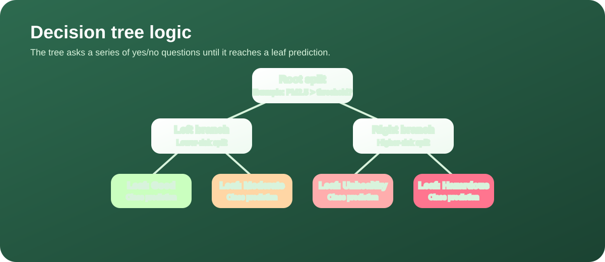
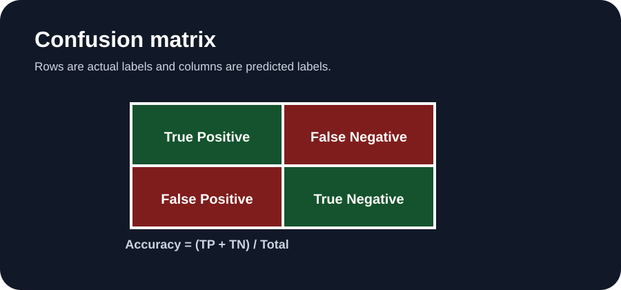
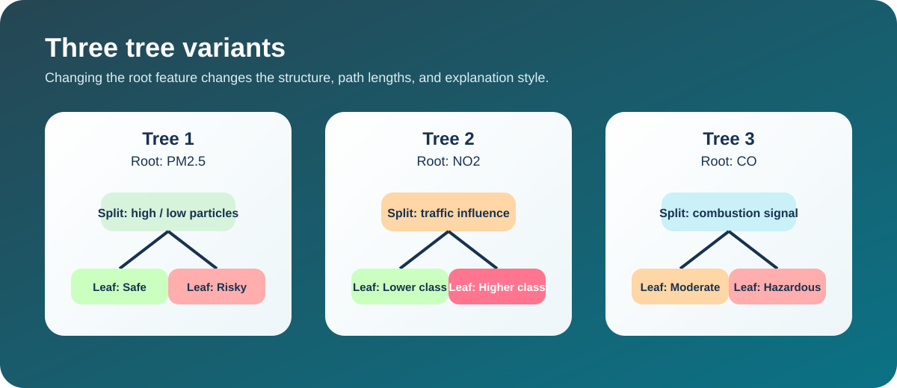

Decision Trees (DT)
Overview
Decision trees are supervised models that split data into smaller and smaller groups by asking a sequence of questions. They are useful because the branching structure is easy to explain, and the final prediction can be traced back to the path the row followed. The same approach works for classification and regression, but here the focus is on classification.

Measures how mixed the classes are at a node.
Measures uncertainty or disorder in a node.
Measures how much a split reduces entropy.
A simple example is a node with 4 clean-air days and 4 polluted days. The entropy is high because the node is maximally mixed. If a split sends all 4 clean days to one branch and all 4 polluted days to another, the child nodes become much purer, so the information gain is high. This is why trees search for the split that best improves class purity.
It is generally possible to create an infinite number of trees because there are many ways to choose root features, thresholds, and stopping rules. Even with the same data, different tree depths, split criteria, and preprocessing choices can produce different structures. That is why pruning and depth limits are important.
Data Prep
The decision tree can use the same feature table as Naive Bayes, which keeps the comparison consistent. The split between training and testing rows is disjoint, so the model is evaluated on examples it has never seen before.

Code
The tree workflow is in module3_models.py. The script fits a decision tree classifier and also supports experiments with different root features and depth limits.
from sklearn.tree import DecisionTreeClassifier
tree = DecisionTreeClassifier(
criterion="gini",
max_depth=4,
random_state=42,
)
tree.fit(X_train, y_train)
predictions = tree.predict(X_test)
Results
The current run on the attached AQI dataset produced an accuracy of 0.8968 with the tree configuration in the script. The model is strong on this binary task, and the visual comparison below shows how changing the root node changes the explanation path even when the end goal is still the same.


| Tree Variant | Root Choice | Difference |
|---|---|---|
| Tree 1 | PM2.5 | Baseline split on particulate matter |
| Tree 2 | NO2 | Emphasizes traffic-related pollution |
| Tree 3 | CO | Highlights combustion and exposure differences |
The verified confusion matrix for the fitted tree was [[1566, 187], [226, 2024]], which means the tree handled both classes well while still making a few boundary mistakes.
Conclusions
Decision trees are attractive because they are easy to explain, but the simplicity comes with a tradeoff: they can overfit quickly if the tree is allowed to grow too deep. For this project, the main lesson is that interpretability is a major strength, especially when the goal is to explain why a day was classified as safe or hazardous.